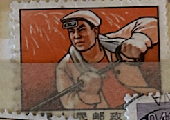
| SOURCE | TITLE| IMAGE MATCH | click to source page |
| Whats something that's gotten less taboo in your country in the past few decades? : r/AskTheWorld | ||
| Political Pop Art | ||
| Steam Community | Steam Műhely::Peoples Republic Of Meelo | |
| Morningsun.org | Images | 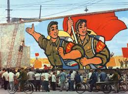 |
| Chineseposters.net | General Line propaganda poster 5 - Consolidate and develop the socialist system of public ownership and collective ownership, strengthen the dictatorship of the proletariat and the international solidarity of the proletariat | | 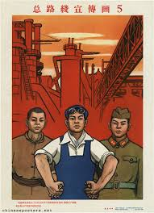 |
| peggyshearn.com | Peggy Schutze Shearn Fine Art | 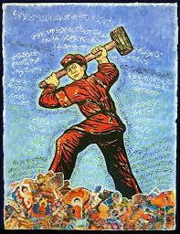 |
| The Unravel | Nonessential Workers of the World Unite! | The Unravel | |
| Invaluable.com | Sold at Auction: JAPANESE MANCHURIAN PROPAGANDA POSTER C 1930 | |
| To the soviet people – the first builder of socialism. Glory! (1957) -Ivanov, Viktor Semenovich : r/PropagandaPosters | 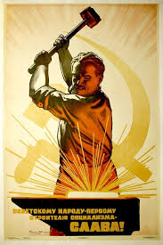 | |
| Bukowskis | RYSKA POLITISKA AFFISCHER, 31 st i mapp, från 1920-1970-tal, tryckta 1976. - Bukowskis | 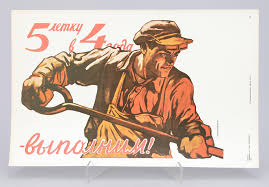 |
| eBay | Industrial Propaganda Сommunism Poster / с1958 / like in a dystopian book 1984 | eBay | |
| TikTok | 青木利憲は赤い月 (@user36731840716867)'s videos with Outrage - HYSTERIC PANIC | TikTok | 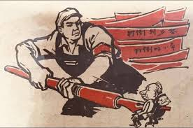 |
| Bugün kaydedecek 56 Sovyet Afişleri fikir | afişler, sosyalizm, devrim ve daha fazlasını afişler | ||
| eBay UK | Poster 1972. Metal. Metallurgy. large 84x59 centimeters. Original. In a very goo | eBay UK | 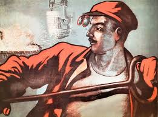 |
| eBay Australia | Soviet Communist Party labor Agitation. Metallurgy - more! Russian postcard 1956 | eBay Australia | 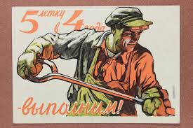 |
| Etsy | Original Chinese Propaganda Poster (large Size: 29" X 20") - Etsy Canada | 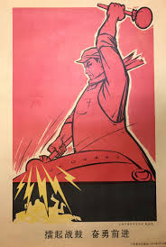 |
| Etsy | Vintage USSR Certificate of Honor – Original Soviet Worker Award – 1985s Soviet Memorabilia – Lenin Portrait – Collectible Soviet Document - Etsy | |
| Aussie on the Road | Showdown: Should I Visit Beijing or Shanghai? – Aussie on the Road | 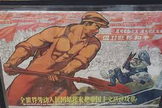 |
| Chisholm-Poster | Po 1964 - 5 летку в 4 года выполним! | Original Vintage Poster | Chisholm Larsson Gallery | 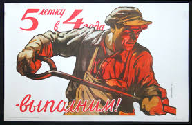 |
| Rob Michiels Auctions | Three large Chinese plaques with Cultural Revolution design, each signed Wu Kang 吳康 and dated 1973 - Rob Michiels Auctions | 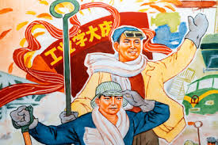 |
| Hello from china : r/ussr | 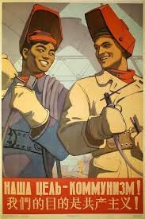 | |
| LiveAuctioneers | Russian Soviet Era Industrial Propaganda Poster | 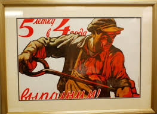 |
| Milken Institute Review | Editors Note - Milken Institute Review | 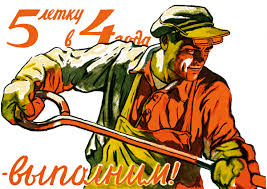 |
| cgtnnow.com | Locomotive Doctor - Walk through CPC's history - Watch CGTN Now | 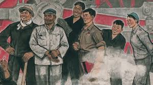 |
| Hong Kong Baptist University – HKBU | Hong Kong Riots 1967 | Hong Kong Baptist University Library Art Collections | |
| 1950년대의 불굴의정신과 혁명적기백이 온나라에 차넘치게 하자! With the unyielding and revolutionary spirit of the 1950s let's work tirelessly for the entire country! AU $160 + $60 postage on Ebay AU $145 + | 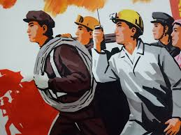 | |
| Amazon.com | Amazon.com: Soviet Era Poster 572 - Sticker : Generic: Tools & Home Improvement | 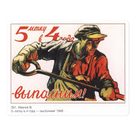 |
| я не понимаю это : r/russian | 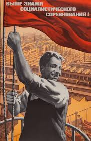 | |
| eBay | FRANK KOZIK SIGNED #d POSTER ~ Celebrating the People's Victory Over Culture '94 | eBay | 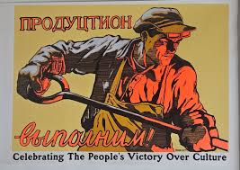 |
| Amazon.com | Amazon.com: comp Brush Paper Soldier Mao Ze Quotes Desktop Wooden Photo Frame Display Picture Art Painting Multiple Sets : Hogar y Cocina | 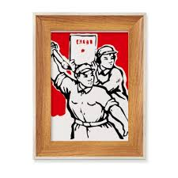 |
| Mary L. Martin Ltd. Postcards | Russia Propoganda Steelworker Antique Postcard J56922 - Mary L. Martin Ltd. Postcards | 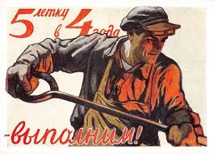 |
| Fandom | Clan building has a HUGE issue... | Fandom | |
| Reason Magazine | Asia Archives | 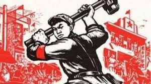 |
| ultrashapoel.com | WORKING CLASS | |
| eBay | Vintage Propaganda | eBay | 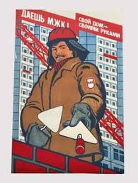 |
| Yelp | STIFTUNG PLAKAT OST - Updated February 2026 - Kleine Jägerstr. 3, Berlin, Germany - Local Services - Phone Number - Yelp | 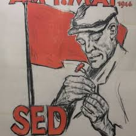 |
| Total Adventure | Russian Far East 1993 | Total Adventure Blog | 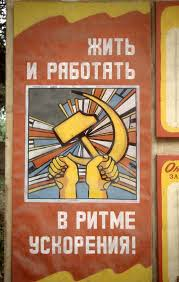 |
| eBay | The Peoples Record album warner brothers records James Taylor Arlo Guthrie | eBay | |
| eBay | Poster 1972. Metal. Metallurgy. large 84x59 centimeters. Original. In a very goo | eBay | 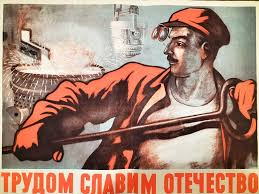 |
| eBay | USSR Russian Soviet Communist Political Propaganda Poster Reprint 11.5”x16” | eBay | 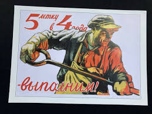 |
| eBay | 1969 SOVIET ART POSTER – FOR YOU KOLKHOZ CONGRESS – USSR FARMING IN SOVIET UNION | eBay | |
| ぶっとびねっと | Russian posters, Cuban and other posters. Propaganda posters. | 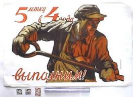 |
| eBay | FRANK KOZIK SIGNED #d POSTER ~ Celebrating the People's Victory Over Culture '94 | eBay | 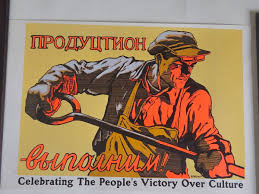 |
| HipPostcard | 237568 PROPAGANDA Poster Five-Year Plan by IVANOV old Rus PC | Topics - Illustrators & Photographers - Illustrators - Signed - Other Illustrators, Po... / HipPostcard | 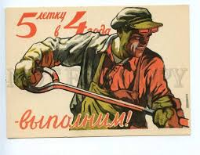 |
| eBay | VINTAGE PROPAGANDA POSTER ORIGINAL COMMUNIST POSTER "9TH SEPTEMBER" 1958 YEAR | eBay | |
| Let's fulfil the 5-years plan in 4 years! 1948 : r/PropagandaPosters | 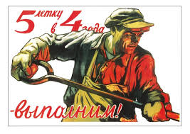 | |
| Art Collectorz | Tom Petty: An American Treasure (Red / Yellow) by Shepard Fairey Editioned artwork | Art Collectorz | |
| pixels.com | Soviet Union propaganda poster Poster by Russian School - Pixels | 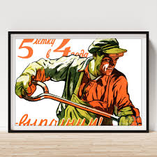 |
| eBay | لوحة فيلم سينما مصري رجال في العاصف Egypt +Incomplete+ Arabic Film Billboard 60s | eBay | |
| Redbubble | Soviet Propaganda Poster: To the soviet people – the first builder of socialism. Glory!" iPhone Case for Sale by verypeculiar | Redbubble | 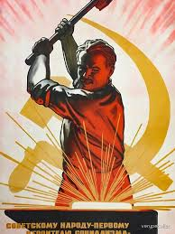 |
| International Poster Gallery | Soviets of the workers are the true organs of power in our country! | 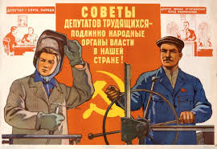 |
| eBay | 1960 Large USSR POSTER _Great Soviet Constitution_ Communist Vintage Propaganda | eBay | 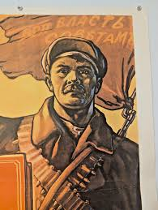 |
| Amazon.in | Bestchong Communist Paper Red Patriotism Art Painting Frame Exhibition Decoration Home Adorn Decor : Amazon.in: Home & Kitchen | 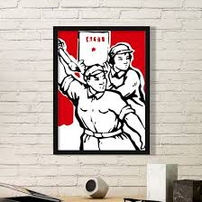 |
| Happy pride month to my LGBT+ homies, there's some communist yaoi (the OG yaoi), memes and a reminder that nazbols and reactionaries are NOT welcome in communism : r/CommunismMemes | ||
| Reason Magazine | How Socialism Leads to More Domination of Workers than Free Markets | |
| eBay | BIG Original 1978 Soviet Steelworker propaganda Socialist Realism Poster art | eBay | 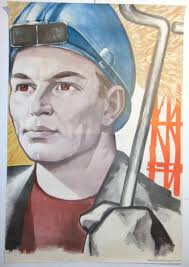 |
| postercrazed.com | Construction Crew | 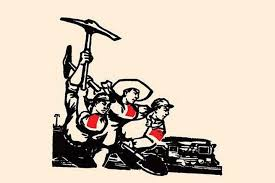 |
| We'll improve the roads and other means of transportation", USSR, 1920s. : r/MarxistCulture | 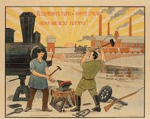 | |
| "Our friendship is strong as steel!" Sino-Soviet friendship poster, 1958 : r/PropagandaPosters | ||
| Amazon.com | Beach Boys, Fleetwood Mac, Arlo Guthrie, Alice Cooper, Nazereth - The Peoples' Record - Amazon.com Music | 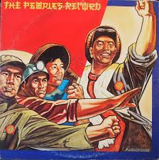 |